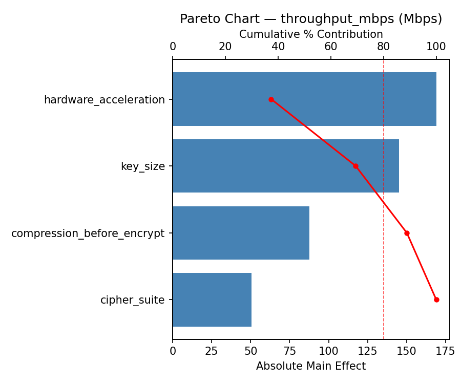
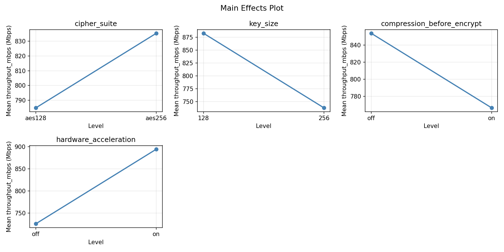
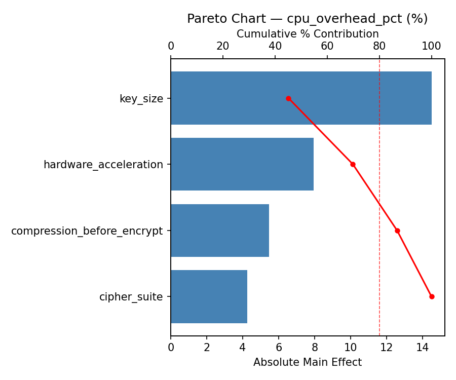

Summary
This experiment investigates encryption pipeline optimization. Full factorial of cipher suite, key size, compression, and hardware acceleration for throughput and CPU overhead.
The design varies 4 factors: cipher suite, ranging from aes128 to aes256, key size (bits), ranging from 128 to 256, compression before encrypt, ranging from off to on, and hardware acceleration, ranging from off to on. The goal is to optimize 2 responses: throughput mbps (Mbps) (maximize) and cpu overhead pct (%) (minimize). Fixed conditions held constant across all runs include protocol = tls1.3, mode = gcm.
A full factorial design was used to explore all 16 possible combinations of the 4 factors at two levels. This guarantees that every main effect and interaction can be estimated independently, at the cost of a larger experiment (16 runs).
Quadratic response surface models were fitted to capture potential curvature and factor interactions. The RSM contour plots below visualize how pairs of factors jointly affect each response.
Key Findings
For throughput mbps, the most influential factors were compression before encrypt (38.0%), cipher suite (32.4%), key size (21.0%). The best observed value was 1329.0 (at cipher suite = aes256, key size = 256, compression before encrypt = on).
For cpu overhead pct, the most influential factors were compression before encrypt (43.0%), cipher suite (26.3%), key size (24.1%). The best observed value was 2.7 (at cipher suite = aes256, key size = 256, compression before encrypt = on).
Recommended Next Steps
- Consider whether any fixed factors should be varied in a future study.
Experimental Setup
Factors
| Factor | Low | High | Unit |
|---|
cipher_suite | aes128 | aes256 | |
key_size | 128 | 256 | bits |
compression_before_encrypt | off | on | |
hardware_acceleration | off | on | |
Fixed: protocol = tls1.3, mode = gcm
Responses
| Response | Direction | Unit |
|---|
throughput_mbps | ↑ maximize | Mbps |
cpu_overhead_pct | ↓ minimize | % |
Configuration
{
"metadata": {
"name": "Encryption Pipeline Optimization",
"description": "Full factorial of cipher suite, key size, compression, and hardware acceleration for throughput and CPU overhead"
},
"factors": [
{
"name": "cipher_suite",
"levels": [
"aes128",
"aes256"
],
"type": "categorical",
"unit": ""
},
{
"name": "key_size",
"levels": [
"128",
"256"
],
"type": "continuous",
"unit": "bits"
},
{
"name": "compression_before_encrypt",
"levels": [
"off",
"on"
],
"type": "categorical",
"unit": ""
},
{
"name": "hardware_acceleration",
"levels": [
"off",
"on"
],
"type": "categorical",
"unit": ""
}
],
"fixed_factors": {
"protocol": "tls1.3",
"mode": "gcm"
},
"responses": [
{
"name": "throughput_mbps",
"optimize": "maximize",
"unit": "Mbps"
},
{
"name": "cpu_overhead_pct",
"optimize": "minimize",
"unit": "%"
}
],
"settings": {
"operation": "full_factorial",
"test_script": "use_cases/58_encryption_pipeline/sim.sh"
}
}
Experimental Matrix
The Full Factorial Design produces 16 runs. Each row is one experiment with specific factor settings.
| Run | cipher_suite | key_size | compression_before_encrypt | hardware_acceleration |
|---|
| 1 | aes128 | 256 | on | on |
| 2 | aes256 | 128 | off | on |
| 3 | aes128 | 256 | off | on |
| 4 | aes128 | 256 | on | off |
| 5 | aes256 | 256 | on | off |
| 6 | aes256 | 128 | on | off |
| 7 | aes256 | 256 | off | off |
| 8 | aes256 | 128 | off | off |
| 9 | aes128 | 128 | off | on |
| 10 | aes128 | 128 | on | off |
| 11 | aes256 | 256 | off | on |
| 12 | aes256 | 256 | on | on |
| 13 | aes128 | 256 | off | off |
| 14 | aes256 | 128 | on | on |
| 15 | aes128 | 128 | off | off |
| 16 | aes128 | 128 | on | on |
Step-by-Step Workflow
1
Preview the design
$ python doe.py info --config use_cases/58_encryption_pipeline/config.json
2
Generate the runner script
$ python doe.py generate --config use_cases/58_encryption_pipeline/config.json \
--output use_cases/58_encryption_pipeline/results/run.sh --seed 42
3
Execute the experiments
$ bash use_cases/58_encryption_pipeline/results/run.sh
4
Analyze results
$ python doe.py analyze --config use_cases/58_encryption_pipeline/config.json
5
Get optimization recommendations
$ python doe.py optimize --config use_cases/58_encryption_pipeline/config.json
6
Multi-objective optimization
With 2 competing responses, use --multi to find the best compromise via Derringer–Suich desirability.
$ python doe.py optimize --config use_cases/58_encryption_pipeline/config.json --multi
7
Generate the HTML report
$ python doe.py report --config use_cases/58_encryption_pipeline/config.json \
--output use_cases/58_encryption_pipeline/results/report.html
Features Exercised
| Feature | Value |
|---|
| Design type | full_factorial |
| Factor types | continuous (1), categorical (3) |
| Arg style | double-dash |
| Responses | 2 (throughput_mbps ↑, cpu_overhead_pct ↓) |
| Total runs | 16 |
Analysis Results
Generated from actual experiment runs using the DOE Helper Tool.
Response: throughput_mbps
Top factors: compression_before_encrypt (38.0%), cipher_suite (32.4%), key_size (21.0%).
ANOVA
| Source | DF | SS | MS | F | p-value |
|---|
| Source | DF | SS | MS | F | p-value |
| cipher_suite | 1 | 197136.0000 | 197136.0000 | 4.942 | 0.0768 |
| key_size | 1 | 82944.0000 | 82944.0000 | 2.079 | 0.2089 |
| compression_before_encrypt | 1 | 271441.0000 | 271441.0000 | 6.804 | 0.0478 |
| hardware_acceleration | 1 | 13689.0000 | 13689.0000 | 0.343 | 0.5835 |
| cipher_suite*key_size | 1 | 15006.2500 | 15006.2500 | 0.376 | 0.5665 |
| cipher_suite*compression_before_encrypt | 1 | 62750.2500 | 62750.2500 | 1.573 | 0.2652 |
| cipher_suite*hardware_acceleration | 1 | 87912.2500 | 87912.2500 | 2.204 | 0.1978 |
| key_size*compression_before_encrypt | 1 | 258572.2500 | 258572.2500 | 6.482 | 0.0515 |
| key_size*hardware_acceleration | 1 | 1560.2500 | 1560.2500 | 0.039 | 0.8510 |
| compression_before_encrypt*hardware_acceleration | 1 | 105300.2500 | 105300.2500 | 2.640 | 0.1652 |
| Error | 5 | 199468.2500 | 39893.6500 | | |
| Total | 15 | 1295779.7500 | 86385.3167 | | |
Pareto Chart

Main Effects Plot

Response: cpu_overhead_pct
Top factors: compression_before_encrypt (43.0%), cipher_suite (26.3%), key_size (24.1%).
ANOVA
| Source | DF | SS | MS | F | p-value |
|---|
| Source | DF | SS | MS | F | p-value |
| cipher_suite | 1 | 495.0625 | 495.0625 | 2.758 | 0.1577 |
| key_size | 1 | 414.1225 | 414.1225 | 2.307 | 0.1892 |
| compression_before_encrypt | 1 | 1324.9600 | 1324.9600 | 7.381 | 0.0419 |
| hardware_acceleration | 1 | 31.3600 | 31.3600 | 0.175 | 0.6933 |
| cipher_suite*key_size | 1 | 73.1025 | 73.1025 | 0.407 | 0.5514 |
| cipher_suite*compression_before_encrypt | 1 | 246.4900 | 246.4900 | 1.373 | 0.2941 |
| cipher_suite*hardware_acceleration | 1 | 506.2500 | 506.2500 | 2.820 | 0.1539 |
| key_size*compression_before_encrypt | 1 | 1056.2500 | 1056.2500 | 5.884 | 0.0597 |
| key_size*hardware_acceleration | 1 | 6.2500 | 6.2500 | 0.035 | 0.8593 |
| compression_before_encrypt*hardware_acceleration | 1 | 294.1225 | 294.1225 | 1.639 | 0.2567 |
| Error | 5 | 897.4875 | 179.4975 | | |
| Total | 15 | 5345.4575 | 356.3638 | | |
Pareto Chart

Main Effects Plot

Multi-Objective Optimization
When responses compete, Derringer–Suich desirability finds the best compromise.
Each response is scaled to a 0–1 desirability, then combined via a weighted geometric mean.
Overall Desirability
D = 0.9545
Per-Response Desirability
| Response | Weight | Desirability | Predicted | Dir |
|---|
throughput_mbps |
1.5 |
|
1329.00 0.9545 1329.00 Mbps |
↑ |
cpu_overhead_pct |
1.0 |
|
2.70 0.9545 2.70 % |
↓ |
Recommended Settings
| Factor | Value |
|---|
cipher_suite | aes128 |
key_size | 128 bits |
compression_before_encrypt | off |
hardware_acceleration | off |
Source: from observed run #16
Trade-off Summary
Sacrifice = how much worse than single-objective best.
| Response | Predicted | Best Observed | Sacrifice |
|---|
cpu_overhead_pct | 2.70 | 2.70 | +0.00 |
Top 3 Runs by Desirability
| Run | D | Factor Settings |
|---|
| #9 | 0.8618 | cipher_suite=aes128, key_size=128, compression_before_encrypt=on, hardware_acceleration=on |
| #1 | 0.7832 | cipher_suite=aes128, key_size=256, compression_before_encrypt=off, hardware_acceleration=off |
Model Quality
| Response | R² | Type |
|---|
cpu_overhead_pct | 0.1330 | linear |
Full Multi-Objective Output
============================================================
MULTI-OBJECTIVE OPTIMIZATION
Method: Derringer-Suich Desirability Function
============================================================
Overall desirability: D = 0.9545
Response Weight Desirability Predicted Direction
---------------------------------------------------------------------
throughput_mbps 1.5 0.9545 1329.00 Mbps ↑
cpu_overhead_pct 1.0 0.9545 2.70 % ↓
Recommended settings:
cipher_suite = aes128
key_size = 128 bits
compression_before_encrypt = off
hardware_acceleration = off
(from observed run #16)
Trade-off summary:
throughput_mbps: 1329.00 (best observed: 1329.00, sacrifice: +0.00)
cpu_overhead_pct: 2.70 (best observed: 2.70, sacrifice: +0.00)
Model quality:
throughput_mbps: R² = 0.1007 (linear)
cpu_overhead_pct: R² = 0.1330 (linear)
Top 3 observed runs by overall desirability:
1. Run #16 (D=0.9545): cipher_suite=aes128, key_size=128, compression_before_encrypt=off, hardware_acceleration=off
2. Run #9 (D=0.8618): cipher_suite=aes128, key_size=128, compression_before_encrypt=on, hardware_acceleration=on
3. Run #1 (D=0.7832): cipher_suite=aes128, key_size=256, compression_before_encrypt=off, hardware_acceleration=off
Full Analysis Output
=== Main Effects: throughput_mbps ===
Factor Effect Std Error % Contribution
--------------------------------------------------------------
compression_before_encrypt 260.5000 73.4784 38.0%
cipher_suite 222.0000 73.4784 32.4%
key_size -144.0000 73.4784 21.0%
hardware_acceleration -58.5000 73.4784 8.5%
=== ANOVA Table: throughput_mbps ===
Source DF SS MS F p-value
-----------------------------------------------------------------------------
cipher_suite 1 197136.0000 197136.0000 4.942 0.0768
key_size 1 82944.0000 82944.0000 2.079 0.2089
compression_before_encrypt 1 271441.0000 271441.0000 6.804 0.0478
hardware_acceleration 1 13689.0000 13689.0000 0.343 0.5835
cipher_suite*key_size 1 15006.2500 15006.2500 0.376 0.5665
cipher_suite*compression_before_encrypt 1 62750.2500 62750.2500 1.573 0.2652
cipher_suite*hardware_acceleration 1 87912.2500 87912.2500 2.204 0.1978
key_size*compression_before_encrypt 1 258572.2500 258572.2500 6.482 0.0515
key_size*hardware_acceleration 1 1560.2500 1560.2500 0.039 0.8510
compression_before_encrypt*hardware_acceleration 1 105300.2500 105300.2500 2.640 0.1652
Error 5 199468.2500 39893.6500
Total 15 1295779.7500 86385.3167
=== Interaction Effects: throughput_mbps ===
Factor A Factor B Interaction % Contribution
------------------------------------------------------------------------
key_size compression_before_encrypt 254.2500 33.0%
compression_before_encrypt hardware_acceleration 162.2500 21.0%
cipher_suite hardware_acceleration -148.2500 19.2%
cipher_suite compression_before_encrypt 125.2500 16.2%
cipher_suite key_size -61.2500 7.9%
key_size hardware_acceleration 19.7500 2.6%
=== Summary Statistics: throughput_mbps ===
cipher_suite:
Level N Mean Std Min Max
------------------------------------------------------------
aes128 8 699.1250 233.3982 387.0000 1108.0000
aes256 8 921.1250 320.1162 484.0000 1329.0000
key_size:
Level N Mean Std Min Max
------------------------------------------------------------
128 8 882.1250 242.9353 564.0000 1219.0000
256 8 738.1250 338.0010 387.0000 1329.0000
compression_before_encrypt:
Level N Mean Std Min Max
------------------------------------------------------------
off 8 679.8750 266.2278 387.0000 1192.0000
on 8 940.3750 274.6941 564.0000 1329.0000
hardware_acceleration:
Level N Mean Std Min Max
------------------------------------------------------------
off 8 839.3750 318.7982 487.0000 1329.0000
on 8 780.8750 285.5233 387.0000 1219.0000
=== Main Effects: cpu_overhead_pct ===
Factor Effect Std Error % Contribution
--------------------------------------------------------------
compression_before_encrypt -18.2000 4.7194 43.0%
cipher_suite -11.1250 4.7194 26.3%
key_size 10.1750 4.7194 24.1%
hardware_acceleration 2.8000 4.7194 6.6%
=== ANOVA Table: cpu_overhead_pct ===
Source DF SS MS F p-value
-----------------------------------------------------------------------------
cipher_suite 1 495.0625 495.0625 2.758 0.1577
key_size 1 414.1225 414.1225 2.307 0.1892
compression_before_encrypt 1 1324.9600 1324.9600 7.381 0.0419
hardware_acceleration 1 31.3600 31.3600 0.175 0.6933
cipher_suite*key_size 1 73.1025 73.1025 0.407 0.5514
cipher_suite*compression_before_encrypt 1 246.4900 246.4900 1.373 0.2941
cipher_suite*hardware_acceleration 1 506.2500 506.2500 2.820 0.1539
key_size*compression_before_encrypt 1 1056.2500 1056.2500 5.884 0.0597
key_size*hardware_acceleration 1 6.2500 6.2500 0.035 0.8593
compression_before_encrypt*hardware_acceleration 1 294.1225 294.1225 1.639 0.2567
Error 5 897.4875 179.4975
Total 15 5345.4575 356.3638
=== Interaction Effects: cpu_overhead_pct ===
Factor A Factor B Interaction % Contribution
------------------------------------------------------------------------
key_size compression_before_encrypt -16.2500 32.9%
cipher_suite hardware_acceleration 11.2500 22.8%
compression_before_encrypt hardware_acceleration -8.5750 17.3%
cipher_suite compression_before_encrypt -7.8500 15.9%
cipher_suite key_size 4.2750 8.6%
key_size hardware_acceleration 1.2500 2.5%
=== Summary Statistics: cpu_overhead_pct ===
cipher_suite:
Level N Mean Std Min Max
------------------------------------------------------------
aes128 8 40.1750 16.6086 13.9000 60.5000
aes256 8 29.0500 20.4223 2.7000 58.4000
key_size:
Level N Mean Std Min Max
------------------------------------------------------------
128 8 29.5250 15.1246 7.3000 53.3000
256 8 39.7000 21.8111 2.7000 60.5000
compression_before_encrypt:
Level N Mean Std Min Max
------------------------------------------------------------
off 8 43.7125 16.4245 17.1000 60.5000
on 8 25.5125 17.4526 2.7000 53.3000
hardware_acceleration:
Level N Mean Std Min Max
------------------------------------------------------------
off 8 33.2125 20.2677 2.7000 60.5000
on 8 36.0125 18.6649 7.3000 59.7000
Optimization Recommendations
=== Optimization: throughput_mbps ===
Direction: maximize
Best observed run: #16
cipher_suite = aes256
key_size = 256
compression_before_encrypt = on
hardware_acceleration = off
Value: 1329.0
RSM Model (linear, R² = 0.2427, Adj R² = -0.0327):
Coefficients:
intercept +810.1250
cipher_suite +120.3750
key_size -17.8750
compression_before_encrypt +44.5000
hardware_acceleration -53.5000
RSM Model (quadratic, R² = 0.6479, Adj R² = -4.2818):
Coefficients:
intercept +162.0250
cipher_suite +120.3750
key_size -17.8750
compression_before_encrypt +44.5000
hardware_acceleration -53.5000
cipher_suite*key_size -51.6250
cipher_suite*compression_before_encrypt +81.0000
cipher_suite*hardware_acceleration -66.0000
key_size*compression_before_encrypt +31.7500
key_size*hardware_acceleration -109.7500
compression_before_encrypt*hardware_acceleration -78.6250
cipher_suite^2 +162.0250
key_size^2 +162.0250
compression_before_encrypt^2 +162.0250
hardware_acceleration^2 +162.0250
Curvature analysis:
hardware_acceleration coef=+162.0250 convex (has a minimum)
cipher_suite coef=+162.0250 convex (has a minimum)
key_size coef=+162.0250 convex (has a minimum)
compression_before_encrypt coef=+162.0250 convex (has a minimum)
Notable interactions:
key_size*hardware_acceleration coef=-109.7500 (antagonistic)
cipher_suite*compression_before_encrypt coef=+81.0000 (synergistic)
compression_before_encrypt*hardware_acceleration coef=-78.6250 (antagonistic)
cipher_suite*hardware_acceleration coef=-66.0000 (antagonistic)
cipher_suite*key_size coef=-51.6250 (antagonistic)
key_size*compression_before_encrypt coef=+31.7500 (synergistic)
Predicted optimum (from linear model, at observed points):
cipher_suite = aes256
key_size = 128
compression_before_encrypt = on
hardware_acceleration = off
Predicted value: 1046.3750
Surface optimum (via L-BFGS-B, linear model):
cipher_suite = aes256
key_size = 128
compression_before_encrypt = on
hardware_acceleration = off
Predicted value: 1046.3750
Model quality: Weak fit — consider adding center points or using a different design.
Factor importance:
1. cipher_suite (effect: 240.8, contribution: 51.0%)
2. hardware_acceleration (effect: -107.0, contribution: 22.6%)
3. compression_before_encrypt (effect: 89.0, contribution: 18.8%)
4. key_size (effect: -35.8, contribution: 7.6%)
=== Optimization: cpu_overhead_pct ===
Direction: minimize
Best observed run: #16
cipher_suite = aes256
key_size = 256
compression_before_encrypt = on
hardware_acceleration = off
Value: 2.7
RSM Model (linear, R² = 0.2278, Adj R² = -0.0530):
Coefficients:
intercept +34.6125
cipher_suite -6.4500
key_size +0.9250
compression_before_encrypt -3.1250
hardware_acceleration +4.8875
RSM Model (quadratic, R² = 0.6561, Adj R² = -4.1586):
Coefficients:
intercept +6.9225
cipher_suite -6.4500
key_size +0.9250
compression_before_encrypt -3.1250
hardware_acceleration +4.8875
cipher_suite*key_size +3.8625
cipher_suite*compression_before_encrypt -3.6625
cipher_suite*hardware_acceleration +5.4750
key_size*compression_before_encrypt -2.7375
key_size*hardware_acceleration +7.6250
compression_before_encrypt*hardware_acceleration +4.3750
cipher_suite^2 +6.9225
key_size^2 +6.9225
compression_before_encrypt^2 +6.9225
hardware_acceleration^2 +6.9225
Curvature analysis:
key_size coef=+6.9225 convex (has a minimum)
compression_before_encrypt coef=+6.9225 convex (has a minimum)
cipher_suite coef=+6.9225 convex (has a minimum)
hardware_acceleration coef=+6.9225 convex (has a minimum)
Notable interactions:
key_size*hardware_acceleration coef=+7.6250 (synergistic)
cipher_suite*hardware_acceleration coef=+5.4750 (synergistic)
compression_before_encrypt*hardware_acceleration coef=+4.3750 (synergistic)
cipher_suite*key_size coef=+3.8625 (synergistic)
cipher_suite*compression_before_encrypt coef=-3.6625 (antagonistic)
key_size*compression_before_encrypt coef=-2.7375 (antagonistic)
Predicted optimum (from linear model, at observed points):
cipher_suite = aes128
key_size = 256
compression_before_encrypt = off
hardware_acceleration = on
Predicted value: 50.0000
Surface optimum (via L-BFGS-B, linear model):
cipher_suite = aes256
key_size = 128
compression_before_encrypt = on
hardware_acceleration = off
Predicted value: 19.2250
Model quality: Weak fit — consider adding center points or using a different design.
Factor importance:
1. cipher_suite (effect: -12.9, contribution: 41.9%)
2. hardware_acceleration (effect: 9.8, contribution: 31.8%)
3. compression_before_encrypt (effect: -6.2, contribution: 20.3%)
4. key_size (effect: 1.9, contribution: 6.0%)